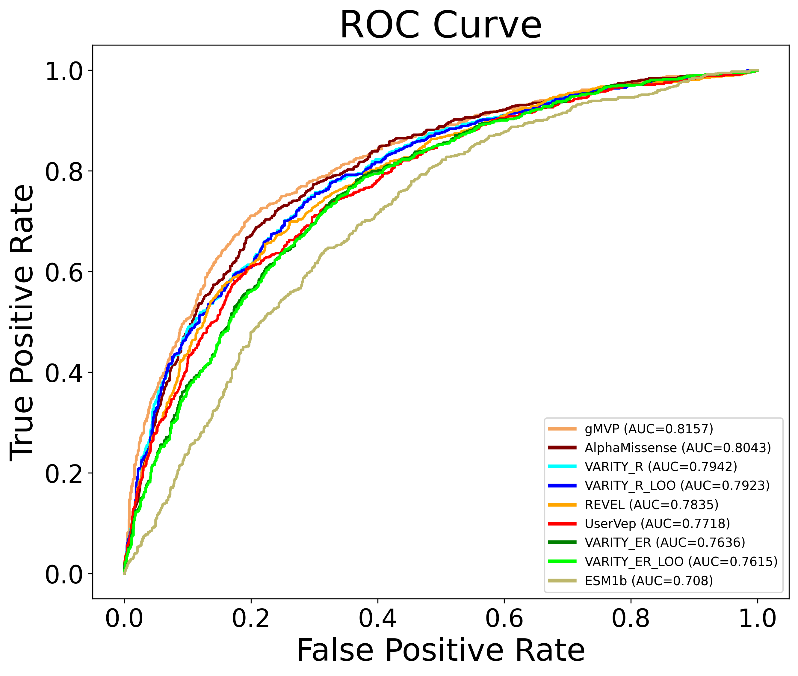

Analysis User Guide
We assume you have issued the following commands as part of the installation:
init_app –-confdir <config> --logdir <log> --outdir <output> --dbdir <dbdir>
install_db --confdir <config>
Where <config>, <log>, <output>, <dbdir> are directories where to store config file, log files, output files containing the results of a benchmarking analysis, and database files, respectively.
This will create a config file called aigct.yaml in the <config> directory.
The primary input to the analysis is a pandas dataframe of variant effect predictor (VEP) scores for a set of variants. The following illustrates the required column header names and data values required.
GENOME_ASSEMBLY |
CHROMOSOME |
POSITION |
REFERENCE_NUCLEOTIDE |
ALTERNATE_NUCLEOTIDE |
RANK_SCORE |
|---|---|---|---|---|---|
hg38 |
1 |
2489207 |
G |
C |
0.36335 |
hg38 |
1 |
2491274 |
G |
A |
0.26946 |
hg38 |
10 |
87952158 |
A |
G |
0.93835 |
The GENOME_ASSEMBLY must currently be hg38. The RANK_SCORE is a numeric prediction. It may or may not be standardized or normalized.
In the examples below. We will refer to “user_vep_scores_df” as the dataframe of user vep scores. We will refer to <config> as the directory name passed as a value of the –confdir parameter during the installation.
To run an analysis do the following in a python environment, i.e. jupyter lab:
import pandas as pd
from aigct.container import VEBenchmarkContainer
container = VEBenchmarkContainer("<config>/aigct.yaml")
analyzer = container.analyzer
metrics = container.analyzer.compute_metrics(
"CANCER", user_vep_scores_df, "UserVep", vep_min_overlap_percent=50,
variant_vep_retention_percent=1, list_variants=True)
Metrics is an object that contains the results of the benchmark analysis. See the the API documentation for the aigct.analyser.VEAnalyzer.compute_metrics method for a detailed explanation of the parameters passed to that method.
Analysis Summary
You can view the information stored in the metrics object in various ways. Run the following code to get a high level textual summary:
container.reporter.write_summary(metrics)
It will generate output similar to the following:
Summary metrics for Variant Effect Prediction Benchmark: 2025/02/14 14:05:19
Total number of user supplied variants: 2000
Total number of variants across all VEPs in analysis: 2000
SCORE_SOURCE NUM_VARIANTS NUM_POSITIVE_LABELS NUM_NEGATIVE_LABELS SOURCE_NAME
ALPHAM 1987 709 1278 AlphaMissense
ESM1B 1979 704 1275 ESM1b
EVE 791 487 304 EVE
GMVP 1977 702 1275 gMVP
REVEL 2000 715 1285 REVEL
UserVep 2000 715 1285 UserVep
VAR_ER 1971 705 1266 VARITY_ER
VAR_ERL 1971 705 1266 VARITY_ER_LOO
VAR_R 1970 705 1265 VARITY_R
VAR_RL 1971 705 1266 VARITY_R_LOO
ROC Metrics
SCORE_SOURCE ROC_AUC EXCEPTION SOURCE_NAME
GMVP 0.805173 NaN gMVP
ALPHAM 0.788139 NaN AlphaMissense
VAR_R 0.782860 NaN VARITY_R
VAR_RL 0.780671 NaN VARITY_R_LOO
REVEL 0.775701 NaN REVEL
UserVep 0.771303 NaN UserVep
VAR_ER 0.752789 NaN VARITY_ER
VAR_ERL 0.750768 NaN VARITY_ER_LOO
EVE 0.733830 NaN EVE
ESM1B 0.686284 NaN ESM1b
Precision/Recall Metrics
SCORE_SOURCE PR_AUC SOURCE_NAME
EVE 0.801647 EVE
GMVP 0.695346 gMVP
ALPHAM 0.656015 AlphaMissense
VAR_R 0.654137 VARITY_R
VAR_RL 0.650803 VARITY_R_LOO
REVEL 0.648509 REVEL
UserVep 0.645919 UserVep
VAR_ER 0.600980 VARITY_ER
VAR_ERL 0.597045 VARITY_ER_LOO
ESM1B 0.500446 ESM1b
Mann-Whitney U -log10(P value)
SCORE_SOURCE NEG_LOG10_MWU_PVAL EXCEPTION SOURCE_NAME
GMVP 111.262129 NaN gMVP
ALPHAM 100.034197 NaN AlphaMissense
VAR_R 95.752290 NaN VARITY_R
VAR_RL 94.321102 NaN VARITY_R_LOO
REVEL 92.353897 NaN REVEL
UserVep 89.468666 NaN UserVep
VAR_ER 76.734006 NaN VARITY_ER
VAR_ERL 75.530175 NaN VARITY_ER_LOO
ESM1B 42.230547 NaN ESM1b
EVE 27.777576 NaN EVE
See the the API documentation for the aigct.reporter.VEAnalysisReporter.write_summary method for a detailed explanation of the parameters passed to that method.
Plot Results
Issue the following to plot the results.
container.plotter.plot_results(metric)
This will generate a series of presentation ready plots and tables:
Plot showing ROC curves for the user and system veps allowing for easy visual comparison
Plot showing Precision/Recall curves for the user and system veps.
Bar graph showing Negative Log10 Mann-Whitney U values for user and system veps.
Table showing ROC AUC’s for user and system veps.
Table showing Precision/Recall AUC’s for user and system veps.
Table showing Negative Log10 Mann-Whitney U values for user and system veps.
Here is an example of some of the plots generated:
{kind=link}

{kind=link}
See the the API documentation for the aigct.plotter.VEAnalysisPlotter.plot_results method for more details.
Export Results
Issue the following to export the raw analysis result data underlying the plots and tables to csv files that can be used to produce your own plots or to do further analysis.
container.exporter.plot_results(metrics, “<export_dir>”)
The second parameter is the name of a directory where you want the results to be exported. It will generate a series of files in a uniquely named subdirectory of this directory.
See the the API documentation for the aigct.exporter.VEAnalysisExporter.export_results method for more details.